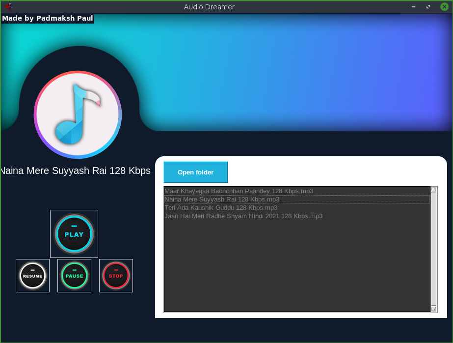

I am a Full Stack developer who believes in making the internet a better place. I currently in school as a Student, Coder, and a freelancer in The Greater Silchar. Yes I have many Bags.
It is my passion to conceptualize, develop, and deploy ideas to this great environment we call the internet. I am an advocate for Higher Education advancement and when I set my goals I sink my teeth into them.
Where I’m From
I was born in the Shilong raised in Assam and currently in Silchar.
More About Me
What is important to you?
Aside from my family education is extremely important to me and has always been a huge component of my growth.
What are your favorite hobbies?
I enjoy playing Cricket. I'm a huge wrestling fan and love attending Wrestle Mania. I also enjoy trying new foods and traveling.
What is your dream job?
I'd love to take my new freelance career to a Microsoft developer
What music have you been listening to lately?
I've been listening to the Focus playlist on Spotify.
Portfolio
Thinkful project base "Build a Landing Page from Scratch" was a sample website built from previous lesson plans.

Music Player with powerful equalizer, Quick search all your music files and music videos/MV, customize background skin and themes, is the best free music.
Record the Times was a Thinkful project that required me to recordscreen the New York Times website using Python.